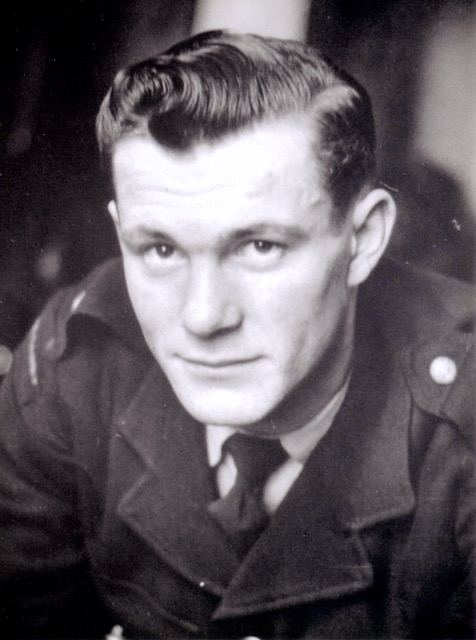
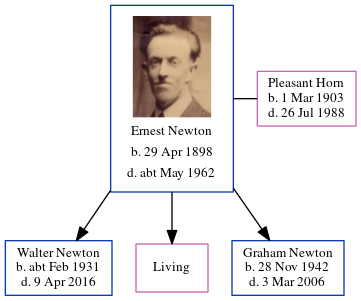

Graham Newton 1942 - 2006
[ Home ] | [ Calendar ] | [ Surnames Index ] | [ Errors ] | [ Family History ]The child of Ernest Newton (a window cleaner) and Pleasant Horn, Graham Newton, the third cousin once-removed on the father's side of Nigel Horne, was born in Ramsgate, Kent, England on 28 Nov 19421,2 and. He married Pauline Williams (with whom he had 1 surviving child, ) in Thanet, Kent, England around Feb 19653.
He died on 3 Mar 2006 in Ashford, Kent, England2.
Parents
- Ernest Thomas was born on 29 Apr 1898
- Pleasant Emily was born on 1 Mar 1903
Citations
- England & Wales births 1837-2006 - Findmypast
- England & Wales deaths 1837-2007 - Findmypast
- England & Wales Marriages 1837-2005 - Findmypast
Media
Graham Newton

England & Wales births 1837-2006 - BMD/B/1942/4/AZ/000854/053
England & Wales deaths 1837-2007 - BMD/D/2006/3/87247674
England & Wales marriages 1837-2005 - BMD/M/1965/1/AZ/000862/004
Family Tree
Map
Generated by ged2site. Last updated on Jul 3, 2024